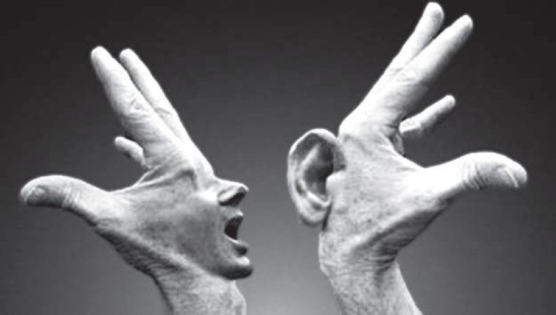

A Resolução CNE/CEB 2/2012, que define as Diretrizes Curriculares Nacionais para o Ensino Médio, prevê que a Educação Física é componente curricular da área da Linguagem assim como a Língua Portuguesa, a Arte e a Língua Estrangeira. Esses componentes devem ser desenvolvidos de forma interdisciplinar e contextualizada, a fim de possibilitar ao aluno o domínio do conhecimento das formas contemporâneas de linguagem por meio de habilidades e competências.
Com base nessa indicação legal sobre o conhecimento da Educação Física, analise a figura a seguir.
Disponível em: http://www.mundodastribos.com/. Acesso em: 11 set. 2014.
A partir do texto e da imagem, avalie as asserções a seguir e a relação proposta entre elas.
I. A linguagem corporal como forma de comunicação e expressão não verbal pode ser desenvolvida como conhecimento específico da Educação Física, e, também, dialogando com outros componentes curriculares.
PORQUE
Deve-se possibilitar a interrelação entre conhecimentos das diversas formas de linguagens na escola, considerando o conhecimento do corpo como meio de expressão e comunicação manifestado por meio da prática corporal em aulas de Educação Física.
A respeito dessas asserções, assinale a opção correta.